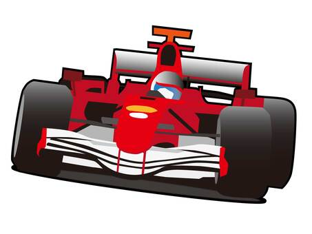
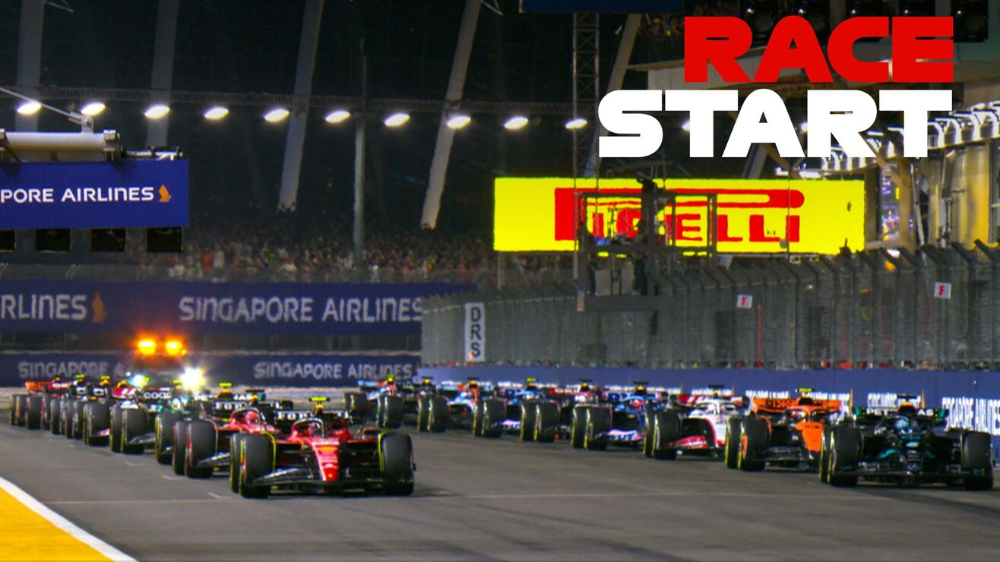

我 的 興 趣
我的興趣有......

看桌球和打桌球
桌球很好看，奧運每場都看了
平常也會看一些日本T聯賽或乒超聯賽
我也喜歡打桌球，只是不怎麼強就是了
看 Formula 1
因為Netflix 的 Drive to survive 所以開始每場比賽都看
最喜歡的車手是 Oscar Piastri 和 Charles Leclerc
最喜歡的車隊是 Mclaren 和 Ferrari



看 NBA 和偶爾打球ㄉ
以前很喜歡看，最近看比較少不過還是會看
最喜歡的隊伍是勇士隊
不過最近還在休賽季沒東西看（快開季啦～）